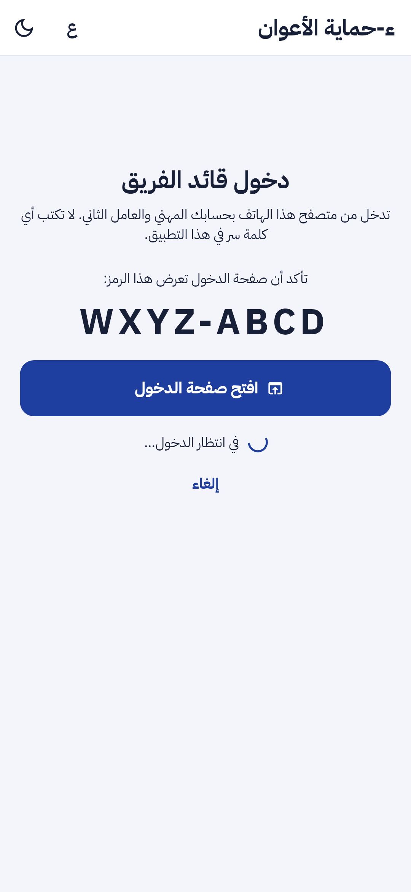
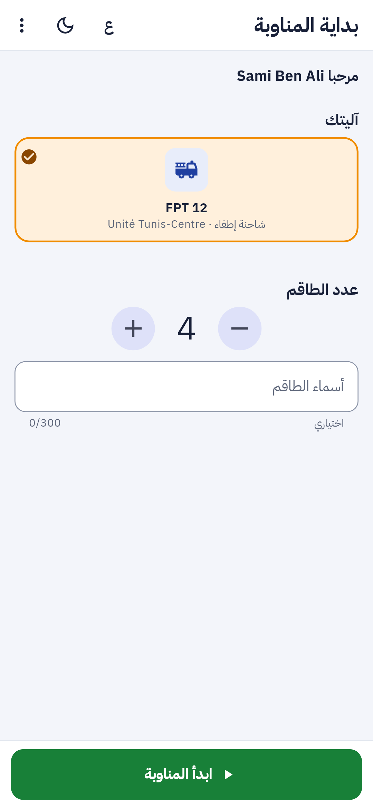
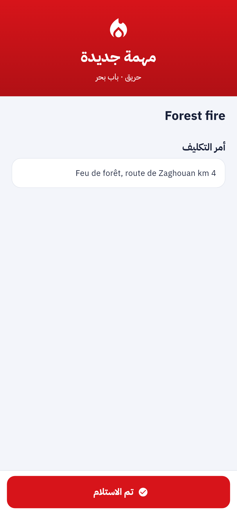
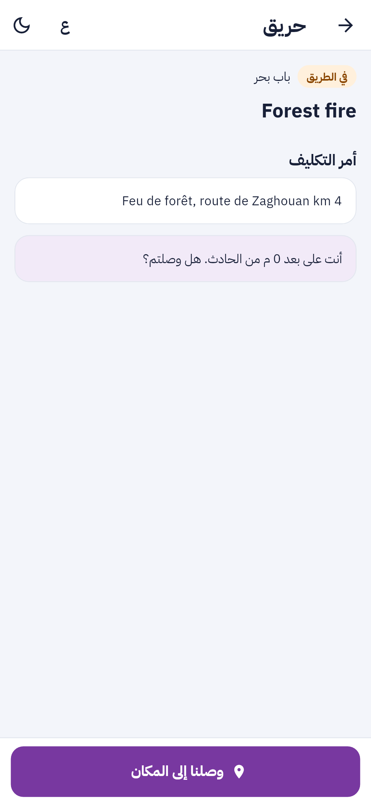
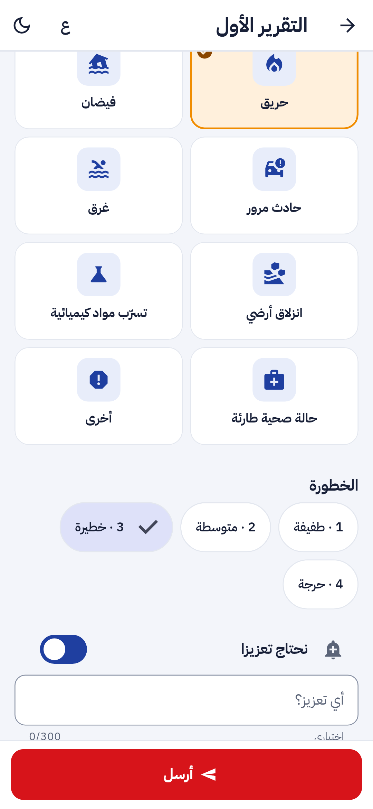
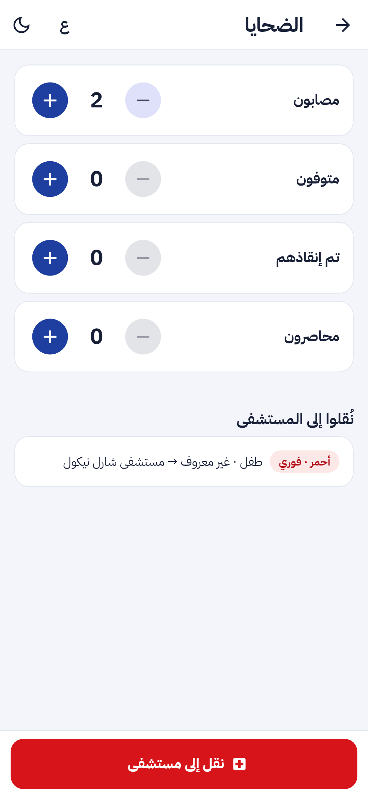
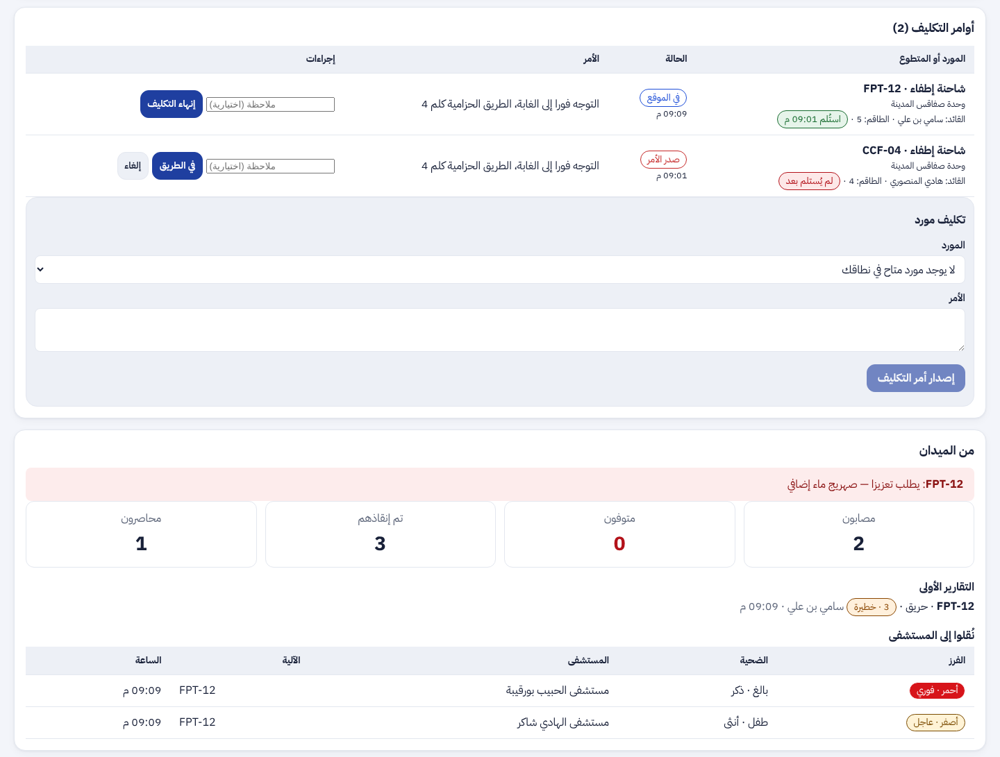
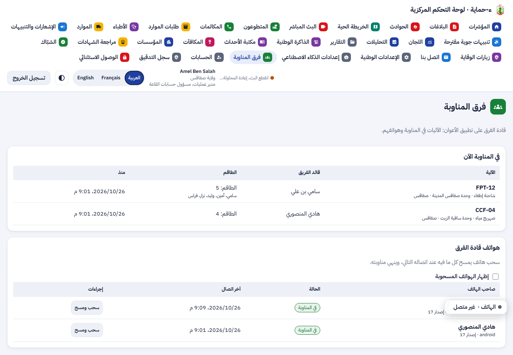

ء-حماية e-Himaya
تقرير المرحلة P4a: تطبيق قادة فرق التدخل (الجزء الأول): الدخول بربط الجهاز ورمز PIN والمسح عن بعد، المناوبة، تنبيه المهمة، أزرار الخطوات، التقرير الأول، الإصابات، وفرق المناوبة في لوحة القيادة
1. أين تقع هذه المرحلة من مسار المشروع
التبليغ
←
المعالجة
←
التحليل
←
مؤشرات الأداء KPI
←
التنبؤ بالذكاء الاصطناعي
←
اتخاذ القرار
- المعالجة: التكليف لم يعد ينتهي عند القاعة. يصل إلى هاتف قائد الآلية فيرنّ، ويعود منه الاستلام والخطوات بتوقيت الهاتف.
- التحليل: التقرير الأول وعدد الضحايا والمنقولون يصلون من الميدان في ثوانٍ، على بطاقة الحادث وفي الخط الزمني.
- اتخاذ القرار: طلب التعزيز والخطر على الطاقم يظهران في أعلى قسم «من الميدان» بلون الإنذار.
2. مراجعة ← تصميم ← تطوير
ما وجدته: التكليف موجود في اللوحة منذ المرحلة 5 بحالاته (صدر الأمر، في الطريق، في المكان، انتهى)، لكن القاعة هي التي تغيّر الحالة بناء على اللاسلكي. لا دور لقائد الفريق، ولا تطبيق له، ولا مكان للتقرير الأول أو لعدد الضحايا. التفاصيل في
design-staff.md.
قرار ينتظر تأكيدك: نفّذت الدخول بحساب شخصي لكل قائد فريق (التوصية)، لأن كل خطوة وكل تقرير يُنسبان بذلك إلى شخص مسمّى في سجل التدقيق، والهاتف يبقى في الآلية ويغيّر قائد المناوبة التالية الحساب فقط. البديل حساب لكل آلية.
- الدخول: تطبيق ثانٍ من نفس قاعدة الكود (
lib/main_staff.dart). يعرض الهاتف رمزا قصيرا، ويؤكّده القائد في صفحة Keycloak بكلمة السر والرمز الثاني (منح الجهاز RFC 8628، عميل ehimaya-staff-app). لا كلمة سر تُكتب في التطبيق ولا حزمة جديدة. ثم رمز PIN من 6 أرقام يُحفظ ببصمة مملّحة، ويُطلب بعد 5 دقائق في الخلفية، وخمس محاولات خاطئة تمسح الهاتف.
- المسح عن بعد: الهاتف يُسجَّل في الخادم. من صفحة «فرق المناوبة» يسحبه مسؤول الحسابات الجهوي أو مسؤول الأمن بعد تأكيد، فتنتهي مناوبته، ويجيب الخادم
410 device_revoked عند الاتصال التالي فيمسح التطبيق كل شيء.
- المناوبة (F-STF-01): آلية من وحدات الولاية، عدد الطاقم وأسماؤهم. مناوبة واحدة لكل قائد ولكل آلية. لا تنتهي المناوبة ومهمة جارية.
- تنبيه المهمة (F-STF-01): حين تكلّف القاعة الآلية تُربط المهمة بالمناوبة، ويخرج إشعار عاجل دون محتوى (معرّف التكليف فقط). التطبيق يسأل كل 15 ثانية، ويعرض المهمة بملء الشاشة مع اهتزاز متكرر حتى «تم الاستلام».
- الخطوات (F-STF-02): زر واحد كبير بعرض الشاشة للخطوة التالية، بتوقيت الهاتف وموقعه. «وصلنا» يُقترح حين يكون الهاتف داخل 150 م من الحادث. الخطوة تمر بنفس قواعد اللوحة، وتنقل بلاغات المواطنين إلى «تم التدخل». كل كتابة تحمل معرّفا يولّده الهاتف، فإعادة إرسالها لا تكرّرها.
- التقرير الأول (F-STF-03): شاشة واحدة: النوع (مملوء من القاعة)، الخطورة من 1 إلى 4، «نحتاج تعزيزا» بملاحظة، «خطر على الطاقم».
- الإصابات (F-STF-04): أربعة عدادات حية (+ و −)، والمنقولون بلون الفرز والفئة العمرية والجنس والمستشفى، دون اسم.
- لوحة القيادة (جزء من F-DSH-35): تحت كل تكليف قائد المناوبة والطاقم و«استُلم» أو «لم يُستلم بعد»؛ قسم «من الميدان» في بطاقة الحادث؛ أربعة أحداث جديدة في الخط الزمني؛ وصفحة «فرق المناوبة».
3. لقطات
تطبيق الأعوان بالعربية: الدخول بالرمز، بداية المناوبة، تنبيه المهمة، المهمة في الطريق مع اقتراح «وصلنا»، التقرير الأول، والإصابات:






وفي لوحة القيادة: التكليفات بقائد كل فريق وحالة الاستلام، ثم قسم «من الميدان»؛ وصفحة «فرق المناوبة» مع هواتف القادة:


4. التقدم لكل جزء
| البند | الحالة | التقدم |
|---|
| الدخول بربط الجهاز، PIN، المسح عن بعد | منجز (P4a) |
|
| F-STF-01 المناوبة وتنبيه المهمة | منجز (P4a)؛ التنبيه فوق شاشة القفل في P4c |
|
| F-STF-02 أزرار الخطوات | منجز (P4a) |
|
| F-STF-03 التقرير الأول | منجز (P4a) |
|
| F-STF-04 الإصابات والمنقولون | منجز (P4a) |
|
| F-DSH-35 متابعة الفرق في اللوحة | منجز جزئيا؛ التقارير المفصّلة في P4b |
|
| F-STF-05 و 06 (P4b)، F-STF-07 و F-APP-38 (P4c) | معتمدة |
|
تقدم P4a: 100%. تطبيق الأعوان كله (P4a و P4b و P4c): حوالي 40%.
5. المحاكاة [SIM]
- [SIM] الآليات والأسماء والمستشفيات في اللقطات بيانات اختبار، ولقطات اللوحة مأخوذة بواجهة برمجية محاكاة.
- [SIM] الإشعار العاجل يمر في بيئة التجربة بمحاكي الإشعارات كما في المراحل السابقة؛ الإرسال الحقيقي يحتاج Firebase (قرار نقل الإشعارات معلّق).
6. الاختبارات المطبقة
| المكوّن | العدد | النتيجة |
|---|
| الخلفية (pytest) | 871، منها 4 مسارات جديدة في test_crew.py | 870 ناجحة؛ اختبار واحد من مرحلة سابقة يفشل أحيانا حسب الترتيب وينجح منفردا (مرة test_knowledge ومرة test_rewards) |
| تطبيق الهاتف (flutter test) | 549، منها 9 جديدة في test/staff/ | كلها ناجحة |
| لوحة القيادة (vitest) | 468، منها 4 جديدة | كلها ناجحة |
Keycloak الحقيقي (check_mfa.py) | الدخول بالرمز على Keycloak 26.8 | ناجح: amr = pwd و otp، الجمهور ehimaya-api، جلسة دون اتصال |
flutter analyze و ruff و mypy و eslint و tsc | — | لا ملاحظة |
- الخادم: الجهاز والمناوبة (آلية محجوزة، مناوبة مفتوحة)، المهمة وخطواتها وتكرارها بنفس المعرّف، التقرير الأول قبل الوصول وبعده، العدادات لا تنزل تحت الصفر، المهام لا يراها إلا قائد الآلية في مناوبته، والمسح عن بعد.
- التطبيق: الدخول بالرمز ثم PIN مرتين، المناوبة، التنبيه والاستلام، الخطوات بالموقع واقتراح الوصول، التقرير الأول، العدادات والنقل، القفل بعد 5 دقائق وخمسة رموز خاطئة، المسح عن بعد، تجديد الرمز ورفضه، وحالات النفاذ بالعربية بالخط العادي والمضاعف.
- اللوحة: الطاقم وقسم «من الميدان»، صفحة فرق المناوبة، وسحب الهاتف بتأكيد.
8. المخرجات المحيَّنة
- الملف الوصفي V12 (docx و pdf) في
spec/: F-STF-01 إلى 04 منجزة، F-DSH-35 منجز جزئيا، الدور الجديد، 347 مسارا و414 عملية، الاختبارات، القرار المعلّق، وخارطة الطريق بـ P4a و P4b و P4c.
- مخططات UML في
diagrams/: مخطط تسلسل جديد «مهمة فريق على تطبيق الأعوان» (47)، وأصناف المناوبة وهاتف الفريق والتقرير الأول والإصابات في مخطط العمليات، وقائد الفريق في مخطط قاعة العمليات.
- العرض للمسؤولين: 27 مرحلة، الاختبارات، وخطوة «تطبيق الأعوان» في خارطة الطريق، في
presentation/.
- مرجع التصميم مُعاد توليده: design-reference.html.
- سجل الإصدارات، القائمة المؤجلة (البند P4)، ودليل التنصيب (بناء تطبيق الأعوان والدور الجديد).
9. ملاحظات وانحرافات
- التنبيه بملء الشاشة يعمل والتطبيق مفتوح أو عند العودة إليه. التنبيه فوق شاشة القفل، وتسجيل رمز الدفع من التطبيق، ونسخة الأندرويد المنفصلة بمعرّف Firebase خاص، نُقلت إلى P4c مع العمل دون اتصال، لأنها تحتاج نسخة توزيع خاصة.
- بعد الدخول بالرمز يطلب Keycloak مرة واحدة الموافقة على «الوصول دون اتصال»؛ هذا ما يسمح للمناوبة أن تتجاوز مهلة الخمول (15 دقيقة) في عالم الأعوان، والـ PIN يحرس الهاتف بينهما.
- صفحة «فرق المناوبة» جديدة بدل إضافة القائمة إلى صفحة الموارد وإدارة الحسابات كما في التصميم الأول، لأن الهواتف تخص مسؤول الحسابات والفرق تخص القاعة، فصارتا قسمين في صفحة واحدة حسب الدور.
- قائد الفريق لا يفتح لوحة القيادة.
10. ما يلي
P4b: التقرير الميداني المفصّل حسب النوع بقوالب يصادق عليها الديوان، ووحدة الوقاية في الموقع. ثم P4c: العمل دون اتصال، بديل SMS، تتبع الموقع، التنبيه فوق شاشة القفل، النسخة المنفصلة، وإعلام المواطن بوصول الفريق.